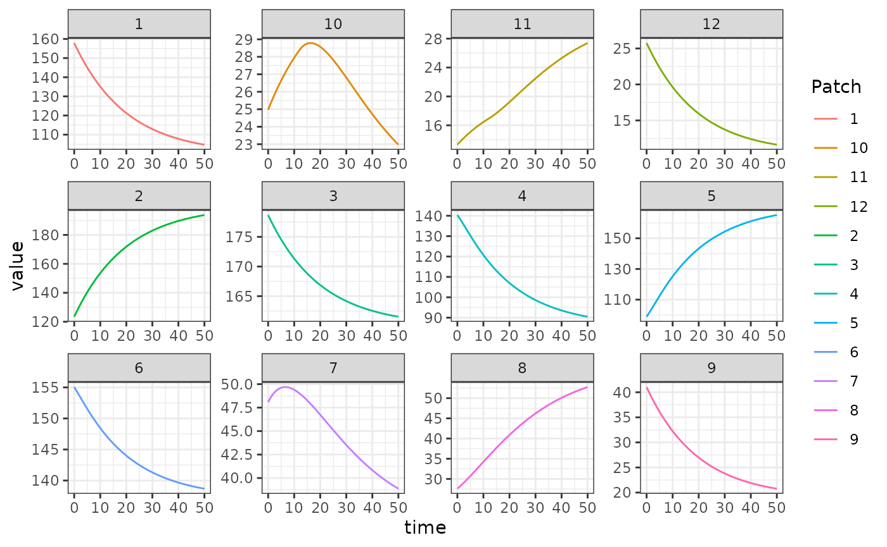

The Ross-Macdonald adult mosquito model fulfills the generic interface of the adult mosquito component.
Here, we use a Ross-Macdonald model based on a model first published in 1982 by Joan Aron and Robert May1. It includes state variables for total mosquito density , infected mosquito density , and infectious mosquito density . Because of the interest in parity, the model has been extended to include a variable that tracks parous mosquitoes, .
Differential Equations
Delay Differential Equations
These equations are naturally implemented by
ramp.xds::dMYZdt.RM_dde, but they can also be implemented
in a closely related set of odes using
ramp.xds::dMYZdt.RM_ode (see below).
Recall that the mosquito demography matrix describing mortality and dispersal is given by:
$$ \Omega = \mbox{diag(g)} + \left(I- {\cal K}\right) \cdot \mbox{diag}(\sigma) $$
Ordinary Differential Equations
In the following, the equation are solved by
ramp.xds::dMYZdt.RM_ode.
The system of ODEs is the same as above except for the equation giving the rate of change in infectious mosquito density, which becomes:
The resulting set of equations is similar in spirit to the simple model presented in Smith & McKenzie (2004)2. in that mortality and dispersal over the EIP is accounted for, but the time lag is not. While transient dynamics of the ODE model will not equal the DDE model, they have the same equilibrium values, and so for numerical work requiring finding equilibrium points, the faster ODE model can be safely substituted.
Equilibrium solutions
There are two logical ways to begin solving the non-trivial equilibrium. The first assumes is known, which implies good knowledge of mosquito ecology. The second assumes is known, which implies knowledge of the biting rate on the human population. We show both below.
Example
Here we show an example of starting and solving a model at equilibrium. Please note that this only runs this adult mosquito model and that most users should read our fully worked example to run a full simulation.
The long way
Here we set up some parameters for a simulation with 3 patches.
HPop = rep(1, 3)
nPatches <- 3
f <- rep(0.3, nPatches)
q <- rep(0.9, nPatches)
g <- rep(1/20, nPatches)
sigma <- rep(1/10, nPatches)
mu <- rep(0, nPatches)
eip <- 12
nu <- 1/2
eggsPerBatch <- 30
MYZo = list(f=f,q=q,g=g,sigma=sigma,mu=mu,eip=eip,nu=nu,eggsPerBatch=eggsPerBatch)
calK <- matrix(0, nPatches, nPatches)
calK[1, 2:3] <- c(0.2, 0.8)
calK[2, c(1,3)] <- c(0.5, 0.5)
calK[3, 1:2] <- c(0.7, 0.3)
calK <- t(calK)
Omega <- compute_Omega_xde(g, sigma, mu, calK)
Upsilon <- expm::expm(-Omega * eip)Now we set up the parameter environment with the correct class using
ramp.xds::make_parameters_MYZ_RM_xde, noting that we will
be solving as an ode.
Now we set the values of and and solve for the equilibrium values.
Omega_inv <- solve(Omega)
M_eq <- as.vector(Omega_inv %*% Lambda)
P_eq <- as.vector(solve(diag(f, nPatches) + Omega) %*% diag(f, nPatches) %*% M_eq)
Y_eq <- as.vector(solve(diag(f*q*kappa) + Omega) %*% diag(f*q*kappa) %*% M_eq)
Z_eq <- as.vector(Omega_inv %*% Upsilon %*% diag(f*q*kappa) %*% (M_eq - Y_eq))
MYZo$M=M_eq
MYZo$P=P_eq
MYZo$Y=Y_eq
MYZo$Z=Z_eqWe use ramp.xds::make_inits_MYZ_RM_xde to store the
initial values. These equations have been implemented to compute
dynamically, so we attach Upsilon as initial values:
params <- make_xds_template("dde", "mosy", nPatches, 1:3, 1:3)
params <- make_MYZpar("macdonald", params, 1, MYZo)
params <- make_MYZinits(params, 1, MYZo)
params <- make_Xpar("trivial", params, 1, Xo)
params <- make_Xinits(params, HPop, 1)
params <- make_Lpar("trivial", params, 1, Lo)
params <- make_Linits(params, 1, Lo)
params <- setup_Hpar_static(params, 1)We set the indices with ramp.xds::make_indices.
params = make_indices(params)
params <- change_calK(calK, params, 1)
params$Lambda[[1]] = Lambda
params$kappa[[1]] = kappa Then we can set up the initial conditions vector and use
deSolve::ode to solve the model. Normally these values
would be computed within ramp.xds::xDE_diffeqn. Here, we
set up a local version:
y0 = get_MYZinits(params, 1)
y0 = as.vector(unlist(y0))
params <- MBionomics(0,y0,params, 1)
dMYZdt_local = func=function(t, y, pars) {
list(dMYZdt(t, y, pars, 1))
}
out <- deSolve::dede(y = y0, times = 0:50, dMYZdt_local, parms=params,
method = 'lsoda')
out1 <- outThe output is plotted below. The flat lines shown here is a verification that the steady state solutions that we computed above match the steady states computed by solving the equations:
out = out[, 1:13]
colnames(out)[params$MYZpar$M_ix+1] <- paste0('M_', 1:params$nPatches)
colnames(out)[params$MYZpar$P_ix+1] <- paste0('P_', 1:params$nPatches)
colnames(out)[params$MYZpar$Y_ix+1] <- paste0('Y_', 1:params$nPatches)
colnames(out)[params$MYZpar$Z_ix+1] <- paste0('Z_', 1:params$nPatches)
out <- as.data.table(out)
out <- melt(out, id.vars = 'time')
out[, c("Component", "Patch") := tstrsplit(variable, '_', fixed = TRUE)]
out[, variable := NULL]
ggplot(data = out, mapping = aes(x = time, y = value, color = Patch)) +
geom_line() +
facet_wrap(. ~ Component, scales = 'free') +
theme_bw()
Setup Utilities
In the vignette above, we set up a function to solve the differential
equation. We hope this helps the end user to understand how
ramp.xds works under the hood, but the point of
ramp.xds is to lower the costs of building, analyzing, and
using models. The functionality in ramp.xds can handle this
case – we can set up and solve the same model using built-in setup
utilities. Learning to use these utilities makes it very easy to set up
other models without having to learn some internals.
To set up a model with the parameters above, we make three list with the named parameters and their values. We also attach to the list the initial values we want to use, if applicable. For the Ross-Macdonald adult mosquito model, we attach the parameter values:
Each one of the dynamical components has a configurable
trivial algorithm that computes no derivatives, but passes its
output as a parameter (see human-trivial.R. To configure
Xpar, we attach the values of kappa to a
list:
Similarly, we configure the trivial algorithm for aquatic
mosquitoes (see aquatic-trivial.R).
To set up the model, we call xds_setup with
nPatchesis set to 3MYZnameis set to “macdonald” to run the Ross-Macdonald model for adult mosquitoes; to pass our options, we writeMYZopts = MYZo; and finally, the dispersal matrixcalKis passed ascalK=calKXnameis set to “trivial” to run the trivial module for human infection dynamicsLnameis set to “trivial” to run the trivial module aquatic mosquitoes
Otherwise, setup takes care of all the internals:
xds_setup(MYZname = "macdonald", Xname = "trivial", Lname = "trivial",
nPatches=3, calK=calK, membership = c(1:3),
residence = c(1:3), HPop = HPop,
MYZopts = MYZo, Xopts = Xo, Lopts = Lo) -> MYZegNow, we can solve the equations using xds_solve and
compare the output to what we got above. If they are identical, the two
objects should be identical, so can simply add the absolute value of
their differences: